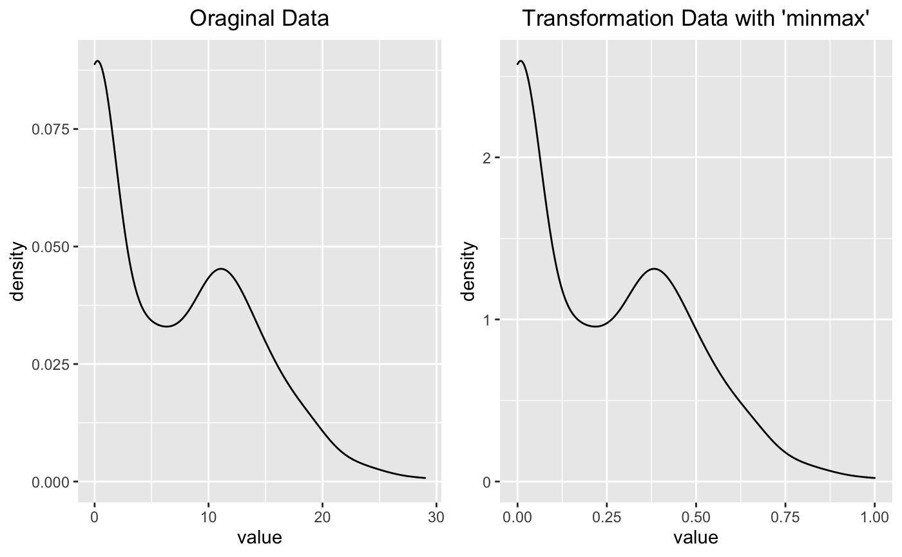

Performs variable transformation for standardization and resolving skewness of numerical variables.
transform( x, method = c("zscore", "minmax", "log", "log+1", "sqrt", "1/x", "x^2", "x^3", "Box-Cox", "Yeo-Johnson") )
| x | numeric vector for transformation. |
|---|---|
| method | method of transformations. |
An object of transform class. Attributes of transform class is as follows.
method : method of transformation data.
Standardization
"zscore" : z-score transformation. (x - mu) / sigma
"minmax" : minmax transformation. (x - min) / (max - min)
Resolving Skewness
"log" : log transformation. log(x)
"log+1" : log transformation. log(x + 1). Used for values that contain 0.
"sqrt" : square root transformation.
"1/x" : 1 / x transformation
"x^2" : x square transformation
"x^3" : x^3 square transformation
"Box-Cox" : Box-Box transformation
"Yeo-Johnson" : Yeo-Johnson transformation
transform() creates an transform class. The `transform` class includes original data, transformed data, and method of transformation.
See vignette("transformation") for an introduction to these concepts.
# Generate data for the example carseats <- ISLR::Carseats carseats[sample(seq(NROW(carseats)), 20), "Income"] <- NA carseats[sample(seq(NROW(carseats)), 5), "Urban"] <- NA # Standardization ------------------------------ advertising_minmax <- transform(carseats$Advertising, method = "minmax") advertising_minmax#> [1] 0.37931034 0.55172414 0.34482759 0.13793103 0.10344828 0.44827586 0.00000000 #> [8] 0.51724138 0.00000000 0.00000000 0.31034483 0.13793103 0.06896552 0.37931034 #> [15] 0.37931034 0.17241379 0.00000000 0.44827586 0.00000000 0.55172414 0.06896552 #> [22] 0.41379310 0.20689655 0.00000000 0.55172414 0.00000000 0.37931034 0.00000000 #> [29] 0.00000000 0.51724138 0.00000000 0.55172414 0.41379310 0.44827586 0.00000000 #> [36] 0.37931034 0.00000000 0.17241379 0.00000000 0.00000000 0.00000000 0.00000000 #> [43] 0.00000000 0.37931034 0.20689655 0.00000000 0.48275862 0.00000000 0.00000000 #> [50] 0.00000000 0.62068966 0.00000000 0.10344828 0.44827586 0.44827586 0.17241379 #> [57] 0.00000000 0.00000000 0.51724138 0.13793103 0.65517241 0.00000000 0.00000000 #> [64] 0.34482759 0.41379310 0.00000000 0.00000000 0.48275862 0.68965517 0.00000000 #> [71] 0.51724138 0.55172414 0.00000000 0.34482759 0.17241379 0.79310345 0.34482759 #> [78] 0.41379310 0.03448276 0.00000000 0.55172414 0.00000000 0.13793103 0.24137931 #> [85] 0.00000000 0.00000000 0.31034483 0.24137931 0.24137931 0.10344828 0.00000000 #> [92] 0.37931034 0.00000000 0.00000000 0.17241379 0.34482759 0.34482759 0.17241379 #> [99] 0.82758621 0.10344828 0.37931034 0.00000000 0.00000000 0.00000000 0.00000000 #> [106] 0.27586207 0.00000000 0.00000000 0.06896552 0.00000000 0.24137931 0.41379310 #> [113] 0.17241379 0.37931034 0.31034483 0.00000000 0.00000000 0.00000000 0.06896552 #> [120] 0.27586207 0.37931034 0.34482759 0.17241379 0.00000000 0.00000000 0.00000000 #> [127] 0.06896552 0.10344828 0.10344828 0.24137931 0.44827586 0.10344828 0.31034483 #> [134] 0.06896552 0.00000000 0.48275862 0.00000000 0.00000000 0.41379310 0.34482759 #> [141] 0.34482759 0.00000000 0.00000000 0.24137931 0.00000000 0.37931034 0.00000000 #> [148] 0.31034483 0.00000000 0.44827586 0.27586207 0.58620690 0.00000000 0.24137931 #> [155] 0.34482759 0.00000000 0.00000000 0.27586207 0.03448276 0.00000000 0.00000000 #> [162] 0.17241379 0.00000000 0.00000000 0.00000000 0.24137931 0.58620690 0.00000000 #> [169] 0.00000000 0.51724138 0.41379310 0.41379310 0.44827586 0.17241379 0.00000000 #> [176] 0.00000000 0.31034483 0.00000000 0.48275862 0.10344828 0.51724138 0.00000000 #> [183] 0.13793103 0.20689655 0.24137931 0.37931034 0.00000000 0.00000000 0.00000000 #> [190] 0.62068966 0.44827586 0.44827586 0.00000000 0.24137931 0.62068966 0.13793103 #> [197] 0.20689655 0.00000000 0.17241379 0.17241379 0.00000000 0.00000000 0.13793103 #> [204] 0.00000000 0.00000000 0.03448276 0.00000000 0.00000000 0.00000000 0.37931034 #> [211] 0.06896552 0.48275862 0.65517241 0.17241379 0.10344828 0.51724138 0.00000000 #> [218] 0.00000000 0.41379310 0.65517241 0.51724138 0.00000000 0.20689655 0.31034483 #> [225] 0.00000000 0.00000000 0.00000000 0.34482759 0.44827586 0.00000000 0.00000000 #> [232] 0.00000000 0.34482759 0.62068966 0.37931034 0.27586207 0.55172414 0.27586207 #> [239] 0.00000000 0.00000000 0.00000000 0.00000000 0.00000000 0.44827586 0.00000000 #> [246] 0.00000000 0.68965517 0.00000000 0.00000000 0.00000000 0.34482759 0.17241379 #> [253] 0.00000000 0.17241379 0.79310345 0.27586207 0.00000000 0.48275862 0.00000000 #> [260] 0.34482759 0.27586207 0.13793103 0.51724138 0.20689655 0.17241379 0.34482759 #> [267] 0.41379310 0.24137931 0.00000000 0.00000000 0.00000000 0.00000000 0.00000000 #> [274] 0.27586207 0.06896552 0.37931034 0.48275862 0.41379310 0.06896552 0.44827586 #> [281] 0.34482759 0.24137931 0.00000000 0.00000000 0.37931034 0.37931034 0.37931034 #> [288] 0.13793103 0.00000000 0.86206897 0.48275862 0.00000000 0.55172414 0.00000000 #> [295] 0.10344828 0.48275862 0.44827586 0.44827586 0.00000000 0.58620690 0.03448276 #> [302] 0.00000000 0.44827586 0.55172414 0.41379310 0.89655172 0.03448276 0.00000000 #> [309] 0.65517241 0.44827586 1.00000000 0.41379310 0.17241379 0.10344828 0.34482759 #> [316] 0.27586207 0.17241379 0.00000000 0.34482759 0.65517241 0.41379310 0.17241379 #> [323] 0.34482759 0.62068966 0.13793103 0.37931034 0.00000000 0.58620690 0.03448276 #> [330] 0.31034483 0.00000000 0.51724138 0.68965517 0.24137931 0.31034483 0.51724138 #> [337] 0.20689655 0.00000000 0.00000000 0.13793103 0.00000000 0.00000000 0.44827586 #> [344] 0.34482759 0.00000000 0.00000000 0.00000000 0.00000000 0.68965517 0.62068966 #> [351] 0.58620690 0.55172414 0.48275862 0.41379310 0.03448276 0.00000000 0.00000000 #> [358] 0.10344828 0.34482759 0.37931034 0.24137931 0.34482759 0.00000000 0.03448276 #> [365] 0.55172414 0.00000000 0.37931034 0.00000000 0.34482759 0.75862069 0.75862069 #> [372] 0.00000000 0.00000000 0.00000000 0.24137931 0.13793103 0.65517241 0.00000000 #> [379] 0.10344828 0.00000000 0.34482759 0.72413793 0.65517241 0.00000000 0.51724138 #> [386] 0.44827586 0.00000000 0.48275862 0.37931034 0.27586207 0.31034483 0.00000000 #> [393] 0.44827586 0.34482759 0.65517241 0.58620690 0.10344828 0.41379310 0.24137931 #> [400] 0.00000000 #> attr(,"method") #> [1] "minmax" #> attr(,"origin") #> [1] 11 16 10 4 3 13 0 15 0 0 9 4 2 11 11 5 0 13 0 16 2 12 6 0 16 0 11 0 #> [29] 0 15 0 16 12 13 0 11 0 5 0 0 0 0 0 11 6 0 14 0 0 0 18 0 3 13 13 5 #> [57] 0 0 15 4 19 0 0 10 12 0 0 14 20 0 15 16 0 10 5 23 10 12 1 0 16 0 4 7 #> [85] 0 0 9 7 7 3 0 11 0 0 5 10 10 5 24 3 11 0 0 0 0 8 0 0 2 0 7 12 #> [113] 5 11 9 0 0 0 2 8 11 10 5 0 0 0 2 3 3 7 13 3 9 2 0 14 0 0 12 10 #> [141] 10 0 0 7 0 11 0 9 0 13 8 17 0 7 10 0 0 8 1 0 0 5 0 0 0 7 17 0 #> [169] 0 15 12 12 13 5 0 0 9 0 14 3 15 0 4 6 7 11 0 0 0 18 13 13 0 7 18 4 #> [197] 6 0 5 5 0 0 4 0 0 1 0 0 0 11 2 14 19 5 3 15 0 0 12 19 15 0 6 9 #> [225] 0 0 0 10 13 0 0 0 10 18 11 8 16 8 0 0 0 0 0 13 0 0 20 0 0 0 10 5 #> [253] 0 5 23 8 0 14 0 10 8 4 15 6 5 10 12 7 0 0 0 0 0 8 2 11 14 12 2 13 #> [281] 10 7 0 0 11 11 11 4 0 25 14 0 16 0 3 14 13 13 0 17 1 0 13 16 12 26 1 0 #> [309] 19 13 29 12 5 3 10 8 5 0 10 19 12 5 10 18 4 11 0 17 1 9 0 15 20 7 9 15 #> [337] 6 0 0 4 0 0 13 10 0 0 0 0 20 18 17 16 14 12 1 0 0 3 10 11 7 10 0 1 #> [365] 16 0 11 0 10 22 22 0 0 0 7 4 19 0 3 0 10 21 19 0 15 13 0 14 11 8 9 0 #> [393] 13 10 19 17 3 12 7 0 #> attr(,"class") #> [1] "transform" "numeric"summary(advertising_minmax)#> * Standardization with minmax #> #> * Information of Transformation (before vs after) #> Original Transformation #> n 400.0000000 400.00000000 #> na 0.0000000 0.00000000 #> mean 6.6350000 0.22879310 #> sd 6.6503642 0.22932290 #> se_mean 0.3325182 0.01146615 #> IQR 12.0000000 0.41379310 #> skewness 0.6395858 0.63958577 #> kurtosis -0.5451178 -0.54511784 #> p00 0.0000000 0.00000000 #> p01 0.0000000 0.00000000 #> p05 0.0000000 0.00000000 #> p10 0.0000000 0.00000000 #> p20 0.0000000 0.00000000 #> p25 0.0000000 0.00000000 #> p30 0.0000000 0.00000000 #> p40 2.0000000 0.06896552 #> p50 5.0000000 0.17241379 #> p60 8.4000000 0.28965517 #> p70 11.0000000 0.37931034 #> p75 12.0000000 0.41379310 #> p80 13.0000000 0.44827586 #> p90 16.0000000 0.55172414 #> p95 19.0000000 0.65517241 #> p99 23.0100000 0.79344828 #> p100 29.0000000 1.00000000plot(advertising_minmax)# Resolving Skewness -------------------------- advertising_log <- transform(carseats$Advertising, method = "log") advertising_log#> [1] 2.3978953 2.7725887 2.3025851 1.3862944 1.0986123 2.5649494 -Inf 2.7080502 #> [9] -Inf -Inf 2.1972246 1.3862944 0.6931472 2.3978953 2.3978953 1.6094379 #> [17] -Inf 2.5649494 -Inf 2.7725887 0.6931472 2.4849066 1.7917595 -Inf #> [25] 2.7725887 -Inf 2.3978953 -Inf -Inf 2.7080502 -Inf 2.7725887 #> [33] 2.4849066 2.5649494 -Inf 2.3978953 -Inf 1.6094379 -Inf -Inf #> [41] -Inf -Inf -Inf 2.3978953 1.7917595 -Inf 2.6390573 -Inf #> [49] -Inf -Inf 2.8903718 -Inf 1.0986123 2.5649494 2.5649494 1.6094379 #> [57] -Inf -Inf 2.7080502 1.3862944 2.9444390 -Inf -Inf 2.3025851 #> [65] 2.4849066 -Inf -Inf 2.6390573 2.9957323 -Inf 2.7080502 2.7725887 #> [73] -Inf 2.3025851 1.6094379 3.1354942 2.3025851 2.4849066 0.0000000 -Inf #> [81] 2.7725887 -Inf 1.3862944 1.9459101 -Inf -Inf 2.1972246 1.9459101 #> [89] 1.9459101 1.0986123 -Inf 2.3978953 -Inf -Inf 1.6094379 2.3025851 #> [97] 2.3025851 1.6094379 3.1780538 1.0986123 2.3978953 -Inf -Inf -Inf #> [105] -Inf 2.0794415 -Inf -Inf 0.6931472 -Inf 1.9459101 2.4849066 #> [113] 1.6094379 2.3978953 2.1972246 -Inf -Inf -Inf 0.6931472 2.0794415 #> [121] 2.3978953 2.3025851 1.6094379 -Inf -Inf -Inf 0.6931472 1.0986123 #> [129] 1.0986123 1.9459101 2.5649494 1.0986123 2.1972246 0.6931472 -Inf 2.6390573 #> [137] -Inf -Inf 2.4849066 2.3025851 2.3025851 -Inf -Inf 1.9459101 #> [145] -Inf 2.3978953 -Inf 2.1972246 -Inf 2.5649494 2.0794415 2.8332133 #> [153] -Inf 1.9459101 2.3025851 -Inf -Inf 2.0794415 0.0000000 -Inf #> [161] -Inf 1.6094379 -Inf -Inf -Inf 1.9459101 2.8332133 -Inf #> [169] -Inf 2.7080502 2.4849066 2.4849066 2.5649494 1.6094379 -Inf -Inf #> [177] 2.1972246 -Inf 2.6390573 1.0986123 2.7080502 -Inf 1.3862944 1.7917595 #> [185] 1.9459101 2.3978953 -Inf -Inf -Inf 2.8903718 2.5649494 2.5649494 #> [193] -Inf 1.9459101 2.8903718 1.3862944 1.7917595 -Inf 1.6094379 1.6094379 #> [201] -Inf -Inf 1.3862944 -Inf -Inf 0.0000000 -Inf -Inf #> [209] -Inf 2.3978953 0.6931472 2.6390573 2.9444390 1.6094379 1.0986123 2.7080502 #> [217] -Inf -Inf 2.4849066 2.9444390 2.7080502 -Inf 1.7917595 2.1972246 #> [225] -Inf -Inf -Inf 2.3025851 2.5649494 -Inf -Inf -Inf #> [233] 2.3025851 2.8903718 2.3978953 2.0794415 2.7725887 2.0794415 -Inf -Inf #> [241] -Inf -Inf -Inf 2.5649494 -Inf -Inf 2.9957323 -Inf #> [249] -Inf -Inf 2.3025851 1.6094379 -Inf 1.6094379 3.1354942 2.0794415 #> [257] -Inf 2.6390573 -Inf 2.3025851 2.0794415 1.3862944 2.7080502 1.7917595 #> [265] 1.6094379 2.3025851 2.4849066 1.9459101 -Inf -Inf -Inf -Inf #> [273] -Inf 2.0794415 0.6931472 2.3978953 2.6390573 2.4849066 0.6931472 2.5649494 #> [281] 2.3025851 1.9459101 -Inf -Inf 2.3978953 2.3978953 2.3978953 1.3862944 #> [289] -Inf 3.2188758 2.6390573 -Inf 2.7725887 -Inf 1.0986123 2.6390573 #> [297] 2.5649494 2.5649494 -Inf 2.8332133 0.0000000 -Inf 2.5649494 2.7725887 #> [305] 2.4849066 3.2580965 0.0000000 -Inf 2.9444390 2.5649494 3.3672958 2.4849066 #> [313] 1.6094379 1.0986123 2.3025851 2.0794415 1.6094379 -Inf 2.3025851 2.9444390 #> [321] 2.4849066 1.6094379 2.3025851 2.8903718 1.3862944 2.3978953 -Inf 2.8332133 #> [329] 0.0000000 2.1972246 -Inf 2.7080502 2.9957323 1.9459101 2.1972246 2.7080502 #> [337] 1.7917595 -Inf -Inf 1.3862944 -Inf -Inf 2.5649494 2.3025851 #> [345] -Inf -Inf -Inf -Inf 2.9957323 2.8903718 2.8332133 2.7725887 #> [353] 2.6390573 2.4849066 0.0000000 -Inf -Inf 1.0986123 2.3025851 2.3978953 #> [361] 1.9459101 2.3025851 -Inf 0.0000000 2.7725887 -Inf 2.3978953 -Inf #> [369] 2.3025851 3.0910425 3.0910425 -Inf -Inf -Inf 1.9459101 1.3862944 #> [377] 2.9444390 -Inf 1.0986123 -Inf 2.3025851 3.0445224 2.9444390 -Inf #> [385] 2.7080502 2.5649494 -Inf 2.6390573 2.3978953 2.0794415 2.1972246 -Inf #> [393] 2.5649494 2.3025851 2.9444390 2.8332133 1.0986123 2.4849066 1.9459101 -Inf #> attr(,"method") #> [1] "log" #> attr(,"origin") #> [1] 11 16 10 4 3 13 0 15 0 0 9 4 2 11 11 5 0 13 0 16 2 12 6 0 16 0 11 0 #> [29] 0 15 0 16 12 13 0 11 0 5 0 0 0 0 0 11 6 0 14 0 0 0 18 0 3 13 13 5 #> [57] 0 0 15 4 19 0 0 10 12 0 0 14 20 0 15 16 0 10 5 23 10 12 1 0 16 0 4 7 #> [85] 0 0 9 7 7 3 0 11 0 0 5 10 10 5 24 3 11 0 0 0 0 8 0 0 2 0 7 12 #> [113] 5 11 9 0 0 0 2 8 11 10 5 0 0 0 2 3 3 7 13 3 9 2 0 14 0 0 12 10 #> [141] 10 0 0 7 0 11 0 9 0 13 8 17 0 7 10 0 0 8 1 0 0 5 0 0 0 7 17 0 #> [169] 0 15 12 12 13 5 0 0 9 0 14 3 15 0 4 6 7 11 0 0 0 18 13 13 0 7 18 4 #> [197] 6 0 5 5 0 0 4 0 0 1 0 0 0 11 2 14 19 5 3 15 0 0 12 19 15 0 6 9 #> [225] 0 0 0 10 13 0 0 0 10 18 11 8 16 8 0 0 0 0 0 13 0 0 20 0 0 0 10 5 #> [253] 0 5 23 8 0 14 0 10 8 4 15 6 5 10 12 7 0 0 0 0 0 8 2 11 14 12 2 13 #> [281] 10 7 0 0 11 11 11 4 0 25 14 0 16 0 3 14 13 13 0 17 1 0 13 16 12 26 1 0 #> [309] 19 13 29 12 5 3 10 8 5 0 10 19 12 5 10 18 4 11 0 17 1 9 0 15 20 7 9 15 #> [337] 6 0 0 4 0 0 13 10 0 0 0 0 20 18 17 16 14 12 1 0 0 3 10 11 7 10 0 1 #> [365] 16 0 11 0 10 22 22 0 0 0 7 4 19 0 3 0 10 21 19 0 15 13 0 14 11 8 9 0 #> [393] 13 10 19 17 3 12 7 0 #> attr(,"class") #> [1] "transform" "numeric"summary(advertising_log)#> * Resolving Skewness with log #> #> * Information of Transformation (before vs after) #> Original Transformation #> n 400.0000000 400.0000000 #> na 0.0000000 0.0000000 #> mean 6.6350000 -Inf #> sd 6.6503642 NaN #> se_mean 0.3325182 NaN #> IQR 12.0000000 Inf #> skewness 0.6395858 NaN #> kurtosis -0.5451178 NaN #> p00 0.0000000 -Inf #> p01 0.0000000 -Inf #> p05 0.0000000 -Inf #> p10 0.0000000 -Inf #> p20 0.0000000 -Inf #> p25 0.0000000 -Inf #> p30 0.0000000 -Inf #> p40 2.0000000 0.6931472 #> p50 5.0000000 1.6094379 #> p60 8.4000000 2.1265548 #> p70 11.0000000 2.3978953 #> p75 12.0000000 2.4849066 #> p80 13.0000000 2.5649494 #> p90 16.0000000 2.7725887 #> p95 19.0000000 2.9444390 #> p99 23.0100000 3.1359198 #> p100 29.0000000 3.3672958# plot(advertising_log) # plot(advertising_log, typographic = FALSE) # Using dplyr ---------------------------------- library(dplyr) carseats %>% mutate(Advertising_log = transform(Advertising, method = "log+1")) %>% lm(Sales ~ Advertising_log, data = .)#> #> Call: #> lm(formula = Sales ~ Advertising_log, data = .) #> #> Coefficients: #> (Intercept) Advertising_log #> 6.6617 0.5707 #>